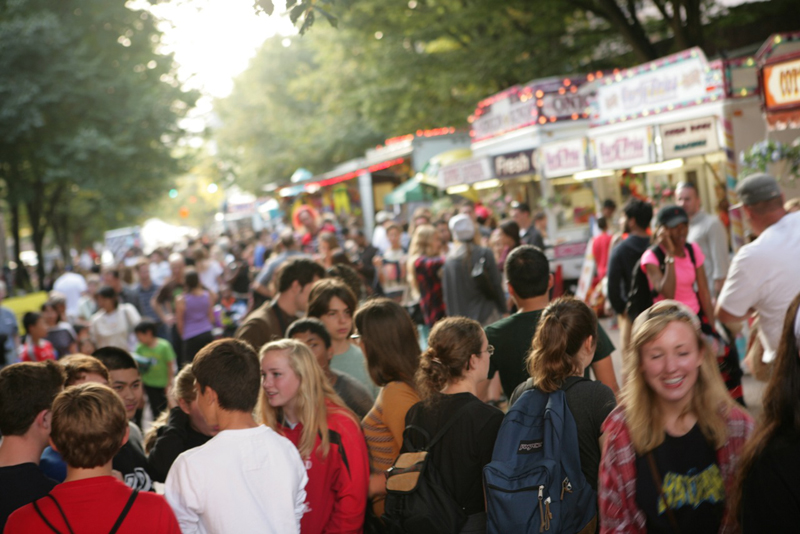

Sponsors
The festival is made possible with the support of our sponsors. Thank you!

Community Support
A special thank you to:
Ithaca's premier event of the Fall, Apple Harvest Festival is a three day celebration of food, fun, and apples!
The 2014 Apple Harvest Festival holds plenty of apples, local produce, fresh baked goods, family entertainment at every turn, games, rides, prizes and live performances on two stages. Apple Harvest Festival is a great introduction to the rich farm and artist community of Ithaca. First time visitors can witness a variety of wonderful local entertainment while also visiting the historical outdoor pedestrian shopping mall, The Ithaca Commons. The pedestrian mall is the epicenter of the festival and the gateway to a nostalgic journey to harvest season fun.
Over 100 vendors will be selling unique apple varieties, hot apple cider donuts, kettle corn, local farm fresh baked goods and a multitude of around the world specialties. Local farmers are on site selling everything from tasty apple beverages to local pumpkins and of course, apples, apples and more apples. Wineries and cideries have regional beverages available for tasting and purchase. Kids can visit with the goats and learn how fiber is made with Laughing Goat Fiber Farm. Looking for quality goods, visit 50 different handcrafting artisans along Cayuga Street at the fall craft show which includes jewelry, ceramics, home decor, body care, specialty gifts, unique sculpture, clothing and so much more.
The event started as a small harvest festival in 1982 to showcase the area’s diverse agricultural products. With heavy involvement from Cornell and a partnership with downtown merchants including David Abdulky and Lyle McCartney, the event was strictly a farmers market. Over time, the addition of food and craft vendors, games, and other activities for children grew the event into what it is today. The event attracts an audience of over 30,000 patrons over the three days.
To find out more about the Apple Harvest Festival, visit: